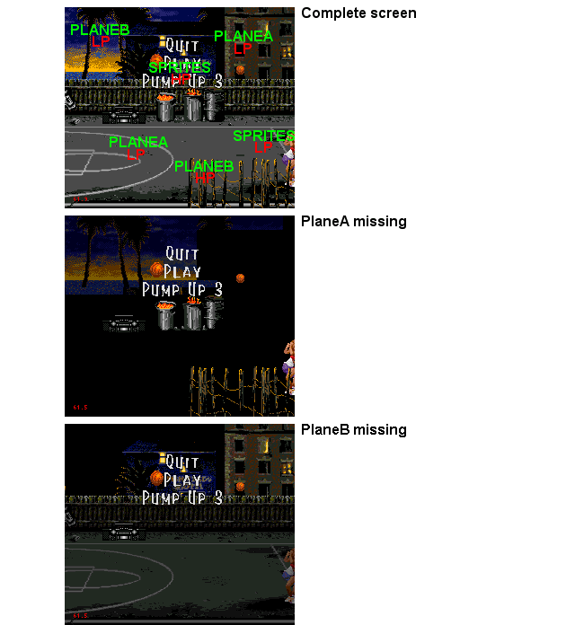

Pic 3 - HP&LP planes, WTF?
Jamit shows something very interresting : The use of tiles priorities to create a 3rd scroll plane.
If you look carefuly : PlaneA = House, Wall, Basket court. PlaneB = Background, Radio+Barrels, Wooden wall.
The wooden wall (PlaneB) is in HP and the Basket court (PlaneA) is in LP so the tiles from PlaneA are displayed behind the tiles from PlaneB.
You may notice that the shadow (due to a LP tiles in PlaneA) only occurs when PlaneB is in LP too (on the house & top wall for exemple).
Other notice : Since the BasketCourt is small, Planes's content doesn't need to be reloaded dynamicaly during scroll (all is loaded at the game start and no more after).
Just for the info : Planes size are 64*64 tiles (max size) and Shadow/Highlight is activated.
